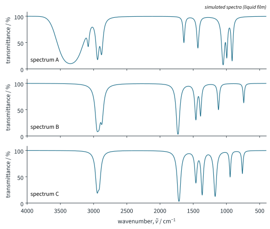

UV/vis and IR Spectroscopy 2 Tutorial
Chapter H3.2 · UV/vis and IR Spectroscopy Tutorial 2
On this page
Use the Data Booklet table of characteristic infra-red absorptions, Data Booklet bond energies, and h = 6.63 × 10−34 J s, c = 3.00 × 108 m s−1 and L = 6.02 × 1023 mol−1. Other values, marked "literature value", are given in the questions. Spectra are simulated. Keep unrounded values until the last step. Marks are shown in square brackets.
Question 1
The diatomic gases carbon monoxide, nitrogen monoxide, hydrogen bromide and chlorine are found in some industrial waste gases. CO absorbs at 2143 cm−1, NO at 1876 cm−1 and HBr at 2559 cm−1 (literature values).
- State which of CO, NO, HBr and Cl2 absorb infrared radiation, and explain your answer using the dipole rule. [3]
- Each of these molecules has only one vibration. Suggest two reasons why an IR-active diatomic gas is likely to be a much weaker greenhouse gas, molecule for molecule, than a polyatomic gas such as CO2. [2]
Question 2
Carbon disulfide, CS2, is a linear molecule, S=C=S.
- State the number of vibrations of CS2. [1]
- Draw diagrams to show each vibration, using arrows to show how the atoms move. [3]
- State which vibrations are IR active, and the number of absorptions in the IR spectrum of CS2. [2]
- The IR spectrum of CS2 vapour shows absorptions at 1535 and 397 cm−1 (literature values). Assign each to a vibration, and explain why the symmetric stretch, at about 658 cm−1, does not appear. [2]
Question 3
Carbonyl sulfide, OCS, is linear, O=C=S. Its IR spectrum shows absorptions at 2062, 859 and 520 cm−1 (literature values).
- State the number of vibrations of OCS. [1]
- Assign each absorption to a vibration. [2]
- Explain why OCS shows one more absorption than CO2, although both are linear triatomic molecules. [2]
Question 4
Hydrogen sulfide, H2S, absorbs at 2626, 2615 and 1183 cm−1; water absorbs at 3756, 3657 and 1595 cm−1 (gas, literature values).
- State the shape of H2S, its number of vibrations and the number of IR absorptions expected. [2]
- Assign the three absorptions of H2S to vibrations. [1]
- Suggest why each absorption of H2S is at a lower wavenumber than the matching absorption of water. [2]
Question 5
C≡C bonds absorb at 2150–2250 cm−1 and C=C bonds of alkenes at 1635–1690 cm−1 (Data Booklet); C–C single bonds absorb at about 800–1200 cm−1 (literature value). The Data Booklet bond energies are C≡C 840, C=C 610 and C–C 350 kJ mol−1.
- Explain the trend in wavenumber in terms of the bonds. [3]
- The bond energies of C–H (410 kJ mol−1) and C–Cl (340 kJ mol−1) are not very different, yet C–H absorbs at 2850–2950 cm−1 and C–Cl at 700–800 cm−1. Explain this difference. [2]
Question 6
Butanal, butanone and but-3-en-1-ol, CH2=CH–CH2–CH2OH, are isomers of formula C4H8O. Fig 1 shows the simulated IR spectra A, B and C of the three compounds, in an unknown order.

- Identify which spectrum belongs to but-3-en-1-ol. Explain your answer by identifying three absorptions. [3]
- Identify the functional group responsible for the strongest absorption in B and in C, and explain why the Data Booklet table does not allow you to decide which of B and C is butanal. [2]
- Describe a chemical test that would distinguish butanal from butanone, stating what you would see with each. [2]
Question 7
Butan-1-ol is oxidised with acidified potassium dichromate(VI) (11.6). In experiment 1 the product D is distilled off as it forms; in experiment 2 the mixture is heated under reflux and gives product E. Their IR spectra show:
- D: absorptions at 2950 and 2870 cm−1, and a strong absorption at 1730 cm−1; no broad absorption above 3000 cm−1.
- E: a strong, very broad absorption from about 2500 to 3300 cm−1, and strong absorptions at 1710 and 1280 cm−1.
- Identify D and E, explaining how the absorptions support your answers. [4]
- Explain which feature of the spectrum of D shows that no butan-1-ol remains in it. [2]
Question 8
Paracetamol is N-(4-hydroxyphenyl)ethanamide, HO–C6H4–NH–CO–CH3 (the two groups on the benzene ring are opposite each other).
- Use the Data Booklet to predict the characteristic absorptions in the IR spectrum of paracetamol. For each, give the bond, the range and the expected appearance. [4]
- Identify two of these absorptions that are likely to overlap. [2]
Question 9
A liquid of formula C3H6O2 has strong IR absorptions at 1735, 1180 and 1060 cm−1, a C–H absorption near 2950 cm−1, and no broad absorption anywhere above 2500 cm−1.
- Identify the functional group most likely to be present, and explain why the compound is not propanoic acid. [3]
- Give the structural formulae of two esters of formula C3H6O2 that fit the spectrum. [2]
- Suggest a method that could decide between these two esters. [1]
Question 10
Read the passage and answer the questions that follow.
- Convert 948 cm−1 to a wavelength in µm, and state its significance for the greenhouse effect. [2]
- SF6 has no dipole moment. Explain why it can still absorb infrared radiation. [2]
- Explain why SF6 has such a large global warming potential. [3]
- Explain why carbon dioxide nevertheless contributes far more to global warming than SF6. [2]
- SF6 has 15 vibrations. Suggest why its IR spectrum shows far fewer than 15 absorptions. [1]